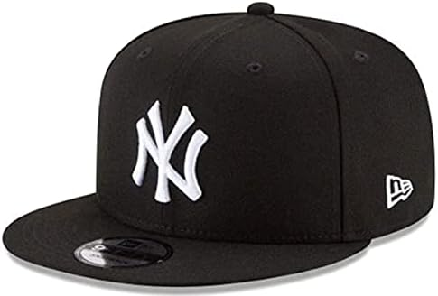
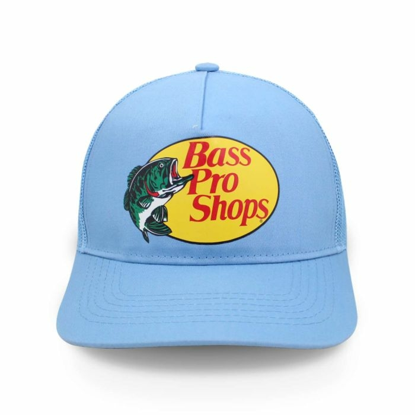
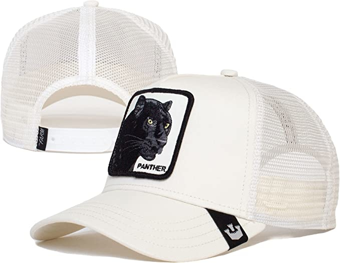

NEW ERA
En 1932, el hijo de Ehrhardt, Harold, se unió al negocio. Harold se dio cuenta de que la demanda por las boinas de moda bajaba, mientras que la popularidad del béisbol crecía. Fue entonces que New Era® se embarcó en su primer negocio de gran escala, al introducir en el mercado un nuevo producto: la gorras de béisbol.
BASS PRO SHOPS
Cuando John L. Morris inauguró Bass Pro en 1971, trató de transmitir su pasión por la pesca del sábalo, la conservación del medio ambiente y la vida al aire libre y la convirtió en un emprendimiento exitoso.
GOORIN BROS
En Pittsburgh (Philadelphia) en 1895 nació dicha marca que a día de hoy ha llegado a su punto más alto hasta el momento. Cassel Goorin puso la primera piedra de la marca que posteriormente fue lanzada por sus hijos Alfred y Ted en 1921.
